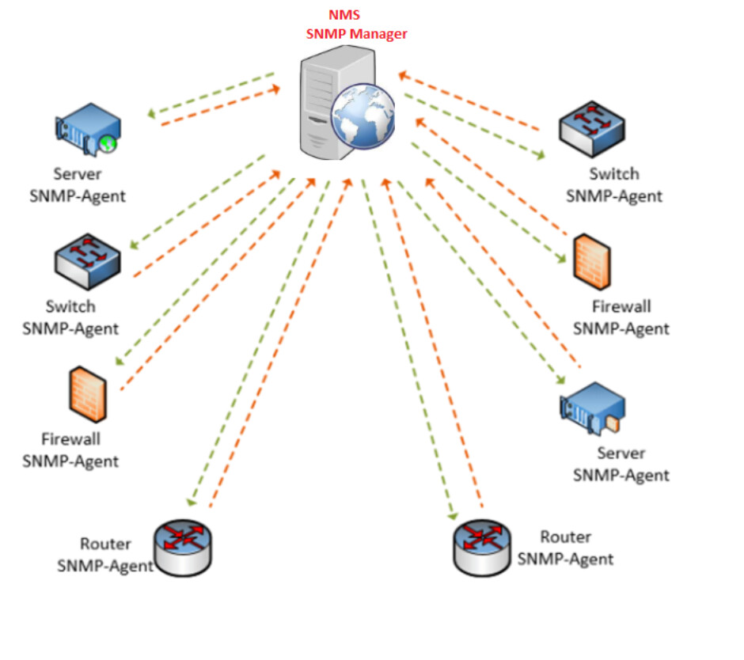

Protocol SNMP
Monitoritzar xarxes
El protocol SNMP (Simple Network Management Protocol) és una manera de gestionar i controlar dispositius de xarxa com routers, switches, servidors, impressores, etc., de forma remota. En poques paraules, SNMP ajuda a que els administradors de xarxa puguin veure com estan treballant aquests dispositius i, si cal, fer canvis en la seva configuració.
Per què és útil SNMP?
-
Monitorització remota: SNMP permet als administradors de xarxa veure l'estat dels dispositius des d'una única ubicació, sense necessitat d'acostar-se físicament a cada dispositiu.
-
Recollir informació de dispositius: Utilitza SNMP per obtenir dades com l'ús de la CPU, l'espai disponible en disc dur, la temperatura del dispositiu, o fins i tot si una connexió de xarxa està activa o no.
-
Rebre alertes automàtiques: Alguns dispositius SNMP poden enviar avisos automàticament si alguna cosa no va bé. Per exemple, si una impressora es queda sense paper o un router deixa de funcionar, el sistema de gestió pot rebre un avís immediat.
-
Controlar dispositius de xarxa: Amb SNMP també es poden realitzar canvis en la configuració dels dispositius, com modificar paràmetres o activar/desactivar funcions.
Exemple senzill d'ús:
Imagina que tens una oficina amb diversos routers i switches. Utilitzant SNMP, pots:
- Consultar la temperatura del router perquè no es sobrecalfi.
- Veure quant de temps fa que el router està encès.
- Rebre una alerta si una connexió de xarxa cau o si un dispositiu deixa de funcionar.
- Gestionar els dispositius des de la teva oficina sense necessitat de desplaçar-te fins al lloc on estan.
Versions
SNMP té tres versions principals:
-
SNMPv1:
La versió original de SNMP, que utilitza comunitats per autenticar-se. És bastant insegura.
-
SNMPv2c:
És una versió millorada de SNMPv1 amb més funcionalitats, però igualment utilitza comunitats i no és molt segura.
-
SNMPv3:
La versió més segura. Ofereix autenticació i xifrat de les dades, cosa que millora la seguretat en xarxes grans i distribuïdes.
Elements
Elements
El sistema SNMP es basa en la comunicació entre aquests tres components per dur a terme la supervisió, gestió i control dels dispositius dins d'una xarxa.

Agents (Agents):
-
Definició: Són els programes o processos que s'executen als dispositius de xarxa (com routers, switches, servidors, impressores, etc.) i que recullen informació sobre el seu estat i funcionament.
-
Funció: L'agent respon a les sol·licituds que rep del gestor (servidor o client) i pot proporcionar informació sobre l'estat del dispositiu que gestiona. A més, pot enviar missatges de tipus "trap" (missatges d'advertència o alerta) si hi ha algun esdeveniment important o una anomalia al dispositiu.
-
Exemple: Un router que executa un agent SNMP per proporcionar estadístiques sobre el trànsit, l'estat de les interfícies, l'ús de la CPU, etc.
Servidors (Managers):
-
Definició: En el context de SNMP, el servidor és el gestor o SNMP Manager, que és el sistema centralitzat que gestiona i supervisa els agents SNMP a la xarxa.
-
Funció: El servidor/generador de peticions (en alguns casos també es pot anomenar client) fa peticions d'informació als agents SNMP per obtenir dades com l'ús de l'ample de banda, les estadístiques de xarxa, l'estat del maquinari, etc. A més, el servidor pot modificar la configuració dels dispositius, si se'n té permís.
-
Exemple: Una estació de treball o servidor a la xarxa que utilitza programari de gestió de xarxes (com Nagios, Zabbix o PRTG) per supervisar diversos dispositius SNMP.
Clients (o Gestors en alguns casos):
- Definició: Els clients SNMP són els sistemes que envien sol·licituds d'informació als agents SNMP. En alguns casos, es poden anomenar gestors si actuen com a controladors centralitzats, però en el sentit tècnic, el client és el sistema que realitza les peticions als agents.
- Funció: Un client SNMP interactua amb el servidor per rebre o enviar informació. Tot i que tècnicament en SNMP no és comú referir-se als dispositius com a clients (ja que se'ls anomena més gestors o estacions de gestió), alguns sistemes poden funcionar com a tals quan consumeixen dades dels agents.
OID
Per monitoritzar la temperatura de la CPU, l'ús de la RAM i altres mètriques de rendiment d'un dispositiu de xarxa mitjançant SNMP, utilitzem OIDs que estan definits en el MIB-II o altres MIBs específics per a dispositius com routers, switches o sistemes operatius.
Aquí tens exemples d'OIDs que poden ser útils per monitoritzar alguns paràmetres relacionats amb el rendiment de la CPU, la memòria RAM i altres valors de sistemes en dispositius de xarxa.
Temperatura de la CPU
Per obtenir la temperatura de la CPU d'un dispositiu, l'OID pot dependre de l'equip i la implementació del MIB. A continuació es mostren alguns OIDs genèrics utilitzats per monitoritzar la temperatura en dispositius de xarxa:
Exemple d'OID per temperatura de la CPU:
| Text Only | |
|---|---|
Desglossament de l'OID:
- 1.3.6.1: Identificador de l'Internet MIB.
- 4.1: Referència a una sèrie d'objectes propietaris de dispositius específics (per exemple, dispositius d'alta gamma).
- 2021: S'associa al paquet UCD-SNMP-MIB que és utilitzat per monitoritzar dispositius Unix i Linux.
- 13.16.1.1.1: Específic per obtenir la temperatura.
Ús de la CPU
Per monitoritzar l'ús de la CPU, es poden utilitzar els següents OIDs dins del MIB:
Exemple d'OID per obtenir l'ús de la CPU:
| Text Only | |
|---|---|
Desglossament de l'OID:
- 1.3.6.1: Identificador d'Internet MIB.
- 4.1: Referència a l'estructura de les implementacions del fabricant.
- 2021: MIB que es fa servir en dispositius basats en Unix i Linux.
- 11.9.0: Especifica el valor d'ús de la CPU.
Ús de la Memòria RAM
Per obtenir l'ús de la memòria RAM, un OID molt comú és:
Exemple d'OID per l'ús de la memòria RAM:
| Text Only | |
|---|---|
Desglossament de l'OID:
- 1.3.6.1: Identificador de l'Internet MIB.
- 4.1: Especifica els OIDs propietaris d'equips determinats.
- 2021: Relacionat amb el MIB UCD-SNMP-MIB, que s'utilitza per supervisar la memòria en dispositius Unix/Linux.
- 4.6.0: Representa la memòria utilitzada en dispositius basats en Unix/Linux.
Memòria Utilitzada i Total
Un altre exemple per obtenir informació de la memòria utilitzada:
Exemple d'OID per obtenir la memòria utilitzada i la memòria total:
| Text Only | |
|---|---|
- Aquest OID pot mostrar el total de la memòria física utilitzada en dispositius basats en Linux.
Temperatura de la CPU en dispositius Juniper
Un dispositiu de la marca Juniper pot utilitzar un OID específic per obtenir la temperatura del sistema, com aquest:
Exemple d'OID per la temperatura de la CPU en Juniper:
| Text Only | |
|---|---|
Com utilitzar aquests OIDs per obtenir informació?
Pots utilitzar eines com snmpget o snmpwalk per obtenir informació dels dispositius de xarxa mitjançant aquests OIDs. Per exemple, si vols obtenir la temperatura de la CPU d'un dispositiu que implementa l'OID 1.3.6.1.4.1.2021.13.16.1.1.1, pots fer-ho així:
| Bash | |
|---|---|